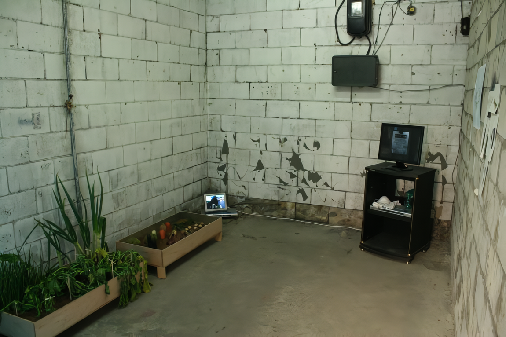
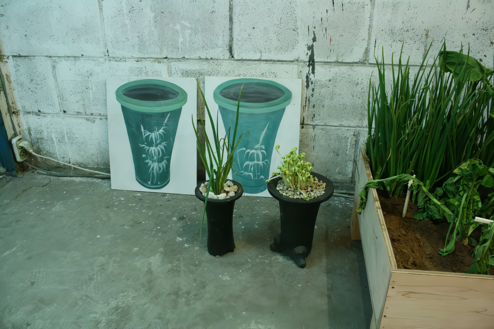

일자리구함의 의미
다른 곳이 아닌 석수시장 내에서 작업을 한다는 것은 분명 그 지역과의 관계가 이루어져야 한다고 생각했다. 관계를 맺기 위한 다양한 방법들이 있겠지만, 그들과 가장 밀접한 관계를 가질 수 있도록 돈을 받지 않고 그들과 함께 일을 했다. 시장 상인들에게는 하루의 일거리가 그날 하루의 삶이나 다름없다. 그들과 함께 일을 한다는 것은 삶 속으로 들어가는 것이라 생각한다.
Getting a Job
I thought working at the market was sure going to be different from working anywhere else, because there were the people involve in your daily routine. So in order to create rather intimate relationships with the merchants, I started working at the market without getting paid. To them, day's work was their life that day. And so, working with them was like looking into their lives.
 
야채를 심고 관리하는 이유
야채를 심었다. 씨앗이 아닌 이미 다 자라 상품으로서 시장에 내다놓은 야채들이다. 심이 이전부터 이미 다 자란 것이기 때문에 야채들을 심으로 곧 죽어버릴 것이란 것을 알고 있었다. 하지만 그것들을 심고 물을 주고 정성스레 닦아주며 관리한다. 일정온도로 유지시켜 주고 원적외선 빛도 밝혀주었다. 야채들은 재래시장을 의미한다. 가슴아픈 이야기지만 대형마트의 등장과 서구의 문화들이 들어오면서 재래시장은 점점 위축되어 가고 있다. 그리고 얼마나 더 이어나갈 지도 예측할 수가 없다. 하지만 그것을 두고 보거나 마냥 치워버리진 않는다. 에술을 매개로 지켜보고, 닦아주고, 거름을 준다.
Reason for Planting and taking care of vegetables
I planted a vegetable. Not to send but full grown vegetable. I know since it' already full grown, if I planted, it was soon to die. But I took a good care of it. I would keep a steady temperature and provide heat rays. The vegetable represents the traditional market. It is sad that because of big discount stores and the flood of western culture, the traditional market place is losing its ground. And we cannot predict how far it is going to make. But we do not want to neglect it. We take care of it, nurture it in the form of art.